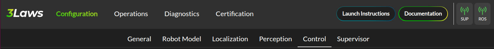

First Time Use
The 3Laws Supervisor is a software-based layer providing reliable and high-performance sense-and-avoid capabilities for a variety of dynamic platforms. It intervenes to prevent collisions when the autonomy stack or human command layer fails to do so.
The Supervisor is designed to sit between the autonomy stack and the robot’s low-level controllers.

Whenever the desired commands from the autonomy/planning stack will not violate the robot’s safety, the Supervisor forwards un-altered commands to the hardware layer. However, when the commands appear to drive the vehicle towards a collision or fail in some way, the Supervisor can intervene by modifying the desired commands in a minimally intrusive way to maintain safety.
Configuration via Control Panel
In order for the Supervisor to work effectively, it needs to be configured based on the robot’s characteristics. This configuration is done through a web-based application called the Control Panel, provided along with the main Supervisor application. To launch the Control Panel, you can use the following command:
3laws control-panel run
then navigate via a web browser to the following URL: http://<IP_ADDRESS_OF_THE_ROBOT>:8000/. The Control Panel is designed to be user-friendly and intuitive, allowing users to configure the Supervisor without needing extensive technical knowledge. The Control Panel also serves monitoring tool for the Supervisor and it is composed of three main sections:
Configuration: This section allows the user to configure the Supervisor’s parameters.
Operations: This section shows the current state of the Supervisor and the robot.
Diagnostics: This section provides access to diagnostic visualization tools.
Each section is accessed by clicking on the corresponding tab in the Control Panel:
{kind=link}
A section is also divided into sub-sections, which are accessed by clicking on the corresponding sub-tabs. In addition, the navigation bar gives you access to other information, namely the documentation, instruction on how to launch the Supervisor ROS node, and a rosbridge connection status.
{kind=link}
Note
All information entered via the Control Panel are saved in the ~/.3laws/config/supervisor.yaml configuration file.
Note
The Save button on each page of the Control Panel should be pressed to record the current page in the supervisor.yaml file before moving on to another page.
All configurable fields are available through a series of pages in the Control Panel. The following sections will describe each tab in the Control Panel in detail.